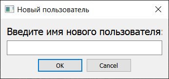
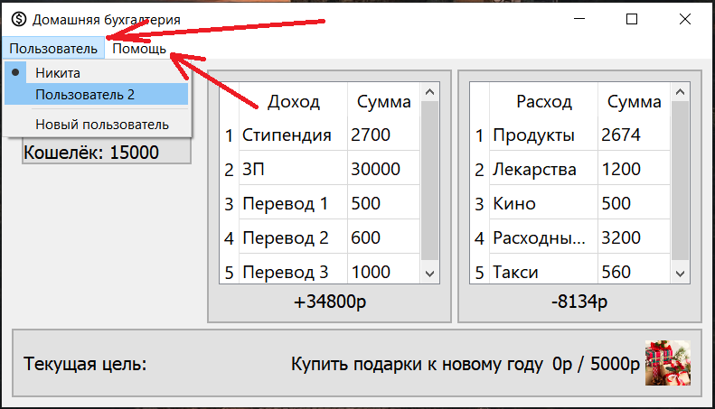
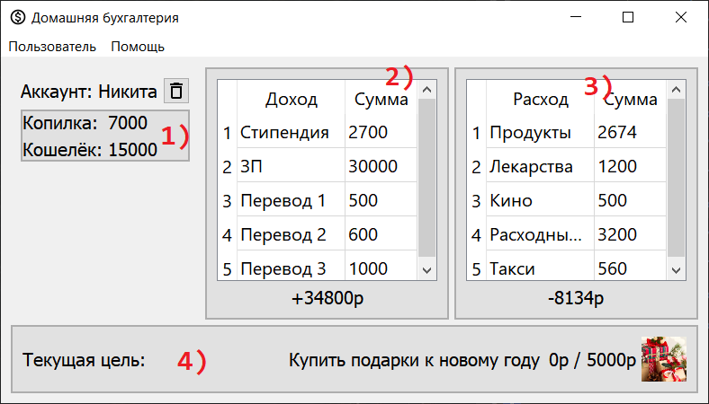

Первый запуск приложения встречает пользователя окном создания новой записи
Нажатием на пункт "Пользователь" осуществляется переключение между всеми имеющимися записями и добавление новых
Нажатие на пункт "Помощь" вызывает справку, как и использование хоткея "F1"
Пользователь
